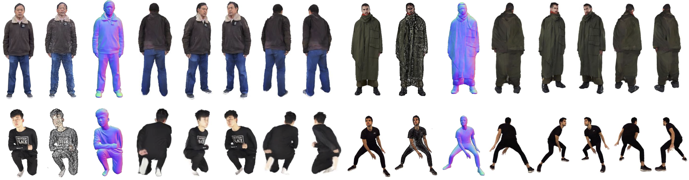

HGM: Generalizable Human Gaussians from Single-View Image
Anonymous Page
Abstract
In this work, we tackle the task of learning 3D human Gaussians from a single image, focusing on recovering detailed appearance and geometry including unobserved regions. We introduce a single-view generalizable Human Gaussian Model (HGM), which employs a novel generate-then-refine pipeline with the guidance from human body prior and diffusion prior. Our approach uses a ControlNet to refine rendered back-view images from coarse predicted human Gaussians, then uses the refined image along with the input image to reconstruct refined human Gaussians. To mitigate the potential generation of unrealistic human poses and shapes, we incorporate human priors from the SMPL-X model as a dual branch, propagating image features from the SMPL-X volume to the image Gaussians using sparse convolution and attention mechanisms. Given that the initial SMPL-X estimation might be inaccurate, we gradually refine it with our HGM model. We validate our approach on several publicly available datasets. Our method surpasses previous methods in both novel view synthesis and surface reconstruction. Our approach also exhibits strong generalization for cross-dataset evaluation and in-the-wild images.